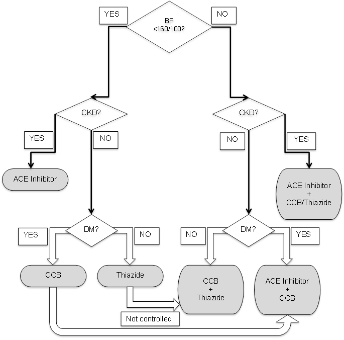

Hypertension
Executive summary
Introduction
Hypertension means elevated (arterial) blood pressure. It is the leading modifiable risk factor for death and disability worldwide. Starting from 115/75 mmHg, every 20 mmHg increase in systolic blood pressure or 10 mmHg rise in diastolic blood pressure doubles the risk of death from cardiovascular disease.
Between 18 to 32% of adults in The Gambia are hypertensive. Over 90% of hypertension is of unknown cause (essential/primary/ idiopathic) with risk factors including increasing age, male sex, Black race and family history of hypertension. Most cases of secondary hypertension result from renal disease.
Target users
· Nurses
· Doctors
Target area of use
· Gate clinic
· Outpatient department
Key areas of focus / New additions / Changes
This guideline addresses the diagnosis and treatment of hypertension in the CSD.
The evaluation of patients with hypertension is aimed at identifying possible underlying causes, assessing overall cardiovascular risk and detecting complications.
Patients seen at the Gate Clinic with blood pressure above 140/90 mmHg should be referred to the outpatient department if there is markedly or persistently raised blood pressure, hyperglycaemia, proteinuria or alarming symptoms.
Drug therapy combined with lifestyle measures is recommended to achieve a target blood pressure of less than 140/90 mmHg. Choice of drugs depends on stage of hypertension at presentation, compelling indications and presence of comorbid conditions. Once-daily medications are preferred to improve adherence to drug therapy. Drug therapy should be adjusted until target blood pressure is reached provided adherence is satisfactory. Once blood pressure control is achieved, do not reduce medication doses unless side-effects occur.
Patients seen in Fajara should be discharged to local care when they are stable. Patients in Keneba should continue care at their Gate Clinic.
This guideline has been updated to address differences between Fajara and Keneba.
Limitations
This guideline
does not address the emergency management of acute hypertensive emergencies.
Presenting symptoms and signs
Hypertension is generally accepted as a systolic blood pressure ≥ 140 mmHg, diastolic blood pressure ≥ 90 mmHg or use of antihypertensive medication prescribed by a qualified clinician.
Symptoms:
· Uncomplicated essential hypertension is usually asymptomatic.
· Secondary hypertension may present with symptoms of underlying disease condition.
o Facial puffiness, nocturia, or passage of dark or frothy urine is suggestive of renal disease
o Excessive sweating, palpitations and heat intolerance suggests hyperthyroidism
o Episodes of palpitations, dizziness, headache and sweating may occur in phaeochromocytoma
o Suspect secondary hypertension in patients newly diagnosed with hypertension who are younger than 30 years.
· Features of some common complications:
o Dyspnea on exertion, difficulty lying flat (orthopnea), bilateral leg swelling in heart failure
o Slurred speech, limb weakness in stroke
o Headache, abnormal behavior, altered consciousness, seizures in hypertensive encephalopathy
Signs:
· In earlier stages, no other presenting signs apart from raised blood pressure in essential hypertension
· Secondary hypertension may present with signs of the underlying condition
· Hypertension may also present with signs of complications such as stroke, encephalopathy, renal failure or heart failure.
Examination findings
· Elevated blood pressure
Important things to look for in OPD:
· Features of long-standing hypertension: thickened arterial walls, heaving apex beat, loud aortic component of second heart sound, retinal changes on fundoscopy.
· Radiofemoral delay: Coarctation of the aorta
· Renal bruit: Renal artery stenosis
· Ballotable kidneys: Polycystic kidney disease
· Pallor, peripheral oedema, facial oedema: Chronic kidney disease
Differential diagnoses
· Renal disease
· Vascular disorders
o Renal artery stenosis
o Coarctation of the aorta
· Endocrine disorders
o Hypothyroidism
o Hyperthyroidism
o Phaeochromocytoma
o Adrenal hypersecretion (Cushing syndrome, Conn syndrome)
· Drugs:
o Steroids (including oral contraceptive pills)
o Non-steroidal anti-inflammatory drugs (NSAIDs)
· Hypertensive disorders of pregnancy
Investigations
To exclude a secondary cause
For all patients under 30 years and others where there are signs to suggest another problem:
· Urinalysis
o Proteinuria of 2+ or more suggests renal cause
o Haematuria may indicate nephritic syndrome
· Serum Electrolytes, Urea & Creatinine
o Elevated creatinine suggests renal involvement
o Derangements in potassium and bicarbonate may point to an adrenal problem
· Full blood count
o Chronic kidney disease causes anaemia (microcytic or normocytic)
To assess other important cardiovascular risk factors
· Fasting plasma glucose
· Fasting Serum Cholesterol (total and HDL only) – these should only be done if the patient does not already have a history of ischaemic heart disease or stroke. For such patients – estimate their cardiovascular risk using QRISK2 https://qrisk.org/2017/
o If the risk is > 10%, do not check the cholesterol, but advise the patient to start taking a statin anyway.
o If the risk is < 5%, they will not need to take a statin whatever their cholesterol level.
o Only check the cholesterol for those patients with risk of 5-10%, then recalculate the risk once the result is available and recommend statins for those with a risk of 10% or more.
To detect subclinical complications
· ECG
Management in Gate Clinic
At the first visit if the BP is > 140/90, request urine dipstick and test blood glucose.
Refer to a doctor if:
· BP is greater than 180 mmHg (systolic) or 110 mmHg (diastolic)
· protein in the urine
· blood glucose is raised (fasting > 6.9 mmol/l, random > 11.1 mmol/l)
· any complaints of shortness of breath, chest pain, severe headaches or visual disturbance.
Otherwise, advise the patient to:
· reduce the salt in their diet
· lose weight if they are overweight
· increase their regular exercise.
· Increase intake of fruits, vegetables and nuts
· Stop smoking and limit alcohol (if applicable)
· Ask them to return in 1-2 days.
o Repeat BP at the return visit. If it is greater than 140/90 mmHg on a second occasion, refer to the doctor.
Management in OPD
The target blood pressure for treating hypertension is a systolic blood pressure of 140mmHg and a diastolic blood pressure of 90 mmHg. Drugs given once daily are preferred to improve adherence to treatment. Counsel patients adequately on the benefits of their treatment, side-effects and the risks of non-adherence. Remind them of the importance of avoiding salt intake and emphasise the need for life-long therapy.
Generally, for patients with systolic blood pressure less than 160 mmHg and diastolic blood pressure less than 100 mmHg, it is preferable to start with a single drug.
· If the patients is not diabetic and has no signs of kidney disease, start with a thiazide at low dose (Bendroflumethiazide 2.5 mg OD)
· If the patient is diabetic without signs of kidney disease, start with a calcium channel blocker at low dose (Amlodipine 5 mg OD)
· If the patient has features of chronic kidney disease, place them on an ACE inhibitor (usually Ramipril 2.5 mg OD) at the lowest effective dose after excluding contraindications.
If blood pressure is still >140/90 mmHg at subsequent clinic visits:
· Enquire about adherence to drug therapy and lifestyle changes. Patients should be encouraged to bring their leftover/empty medication containers on clinic visits
· If adherence appears satisfactory, increase the dose of the medication gradually with each clinic visit until target blood pressure is reached or maximum dose of the drug is achieved.
· If blood pressure is not at target despite maximum dose of the drug, add a second antihypertensive from a different class to the patient’s treatment (see flow chart below).
· Gradually increase this second drug until target blood pressure is reached or maximum dose of the drug is achieved.
· Do not reduce drug doses after target blood pressure is attained unless patient has symptoms and signs of hypotension.
For patients who present initially with systolic blood pressure ≥ 160 mmHg or diastolic blood pressure ≥ 100 mmHg, or patients whose blood pressure is not at target despite maximum dose of the drug, combination therapy is recommended.
· For patients without diabetes mellitus or kidney disease, start with a combination of a calcium channel blocker and a thiazide diuretic (Amlodipine 5 mg OD and Bendroflumethiazide 2.5 mg OD).
· For patients with diabetes mellitus, start with a calcium channel blocker and an ACE inhibitor.
· For patients with kidney disease, place the patient on a combination of an ACE inhibitor with either a calcium channel blocker or a thiazide diuretic.
· Gradually increase the doses of individual drugs at subsequent clinic visits until either target blood pressure is achieved or the maximum doses of both drugs are reached.
Compelling indications are special conditions in which particular classes of hypertension drugs must be prescribed.
· Pregnancy: alpha-methyldopa, nifedipine, labetalol or hydralazine
· Chronic kidney disease: ACE inhibitors
· Heart failure: ACE inhibitors + spironolactone + diuretics (+ beta blocker when stable)
· Previous stroke: ACE inhibitors or thiazide diuretic.
|  |
Patients who do not have adequate control after following this flow chart:
· Those who are not at target despite a combination of two drugs at maximum doses should have a third drug from an unused class added (ACEI +CCB +Thiazide).
· Those who remain uncontrolled at maximal doses of three drugs should be re-evaluated for secondary hypertension. A fourth drug (spironolactone or a beta blocker) can be added.
Considerations for individual drugs
|
Drug group |
Indications |
Contraindications and monitoring |
|
Thiazides Bendroflumethiazide 2.5 mg OD |
First line if no DM or heart failure. Add to ACEi / CCB to improve control. Do not increase dose – it increases the side effects without improving effectiveness. |
Ensure that patients are counseled regarding risks of diuretic use and necessity to omit medications when having an intercurrent diarrhoeal illness. |
|
Calcium channel blockers (CCB) Amlodipine 5-10 mg OD |
First line for co-existing DM. Second line in pregnancy (but use nifedipine not amlodipine). |
|
|
ACE inhibitors (ACEi) Ramipril 2.5-10 mg OD |
First line for co-existing heart failure. |
Check K and Creatinine one month after start of treatment and stop if creatinine rises by > 30%. ACE inhibitors can cause a chronic dry cough. All patients should watch out for angioedema. Female patients on ACE inhibitors should be counseled on the danger of using them in pregnancy. |
|
Spironolactone 25-100 mg OD |
Fourth line for patients with uncontrolled BP despite being on 3 other medications. |
Avoid if serum potassium is > 4.5 mmol/l. |
|
Beta blockers Bisoprolol 1.25-10 mg OD |
Fourth line for stable heart failure or for patients with uncontrolled BP despite being on 3 other medications. |
|
|
Methyldopa 250 mg BD – 500 mg TDS |
First line for pregnancy. |
|
For patients seen at Fajara, discharge
to local care once stable on medication.
For patients seen at Keneba, continue care at the Gate Clinic once stable on
medication.
Recommend patient remains on medication and
has annual blood tests.
Key Issues for Nursing care
How to measure blood pressure correctly:
· The patient should be relaxed, comfortably seated with back supported, legs uncrossed and measured arm supported at heart level.
· Radial or brachial pulse should be assessed for rhythm.
· If irregular, do not use the automatic blood pressure machine. Use a manual sphygmomanometer instead.
· An appropriate cuff size should be selected and applied mid-arm (about 2 cm above the elbow)
· The patient should not speak during blood pressure measurement.
· Measure the blood pressure in both arms. If the difference is more than 20 mmHg between both arms, document the arm with higher reading and use this arm for all future measurements in the patient.
· If the blood pressure reading is higher than 140/90 mmHg, repeat the measurement. If second measurement is significantly different, take a third reading and keep the lower of the last two values.
References
Flack JM, Sica DA, Bakris G, Brown AL, Ferdinand KC, Grimm RH Jr et al. Management of High Blood Pressure in Blacks: An Update of the International Society on Hypertension in Blacks Consensus Statement. Hypertension. 2010;56:780-800.
National Institute for Health and Care Excellence (NICE). Hypertension in adults: diagnosis and management. NICE; 2011. Available from: www.nice.org.uk/guidance/cg127/chapter/1-Guidance
James PA, Oparil S, Carter BL, Cushman WC, Dennison-Himmelfarb C, Handler J.2014 evidence-based guideline for the management of high blood pressure in adults: report from the panel members appointed to the Eighth Joint National Committee (JNC 8).JAMA. 2014 Feb 5;311(5):507-20. doi: 10.1001/jama.2013.284427.
Armstrong C; Joint National Committee.JNC8 guidelines for the management of hypertension in adults.Am Fam Physician. 2014 Oct 1;90(7):503-4.
Williams SK, Ravenell J, Seyedali S, Nayef S, Ogedegbe G. Hypertension Treatment in Blacks: Discussion of the U.S. Clinical Practice Guidelines. Prog Cardiovasc Dis. 2016 Nov-Dec; 59(3): 282–288.
World Health Organization (WHO). Raised blood pressure. Geneva: WHO; 2018. Available from: http://www.who.int/gho/ncd/risk_factors/blood_pressure_prevalence_text/en/
Alexander MR. Hypertension. Medscape; 2018. Available from: https://emedicine.medscape.com/article/241381
|
Written by: |
Name: Fatai Momodu Akemokwe |
Date: 22 May 2018 |
|
Reviewed by: |
Name: Karen Forrest |
Date: 25 June 2018 |
|
Version: |
Change history: |
Review due date: |
|
1.0 |
New document |
|
|
2.0 |
Rewritten on new template and to address differences between Fajara and Keneba |
31 July 2020 |
|
2.1 |
Executive summary added |
31 July 2020 |
|
Review Comments (if applicable) |
|
|